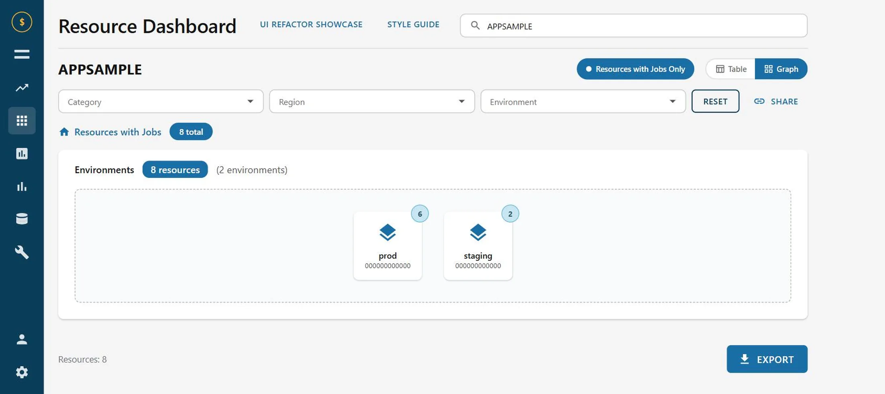
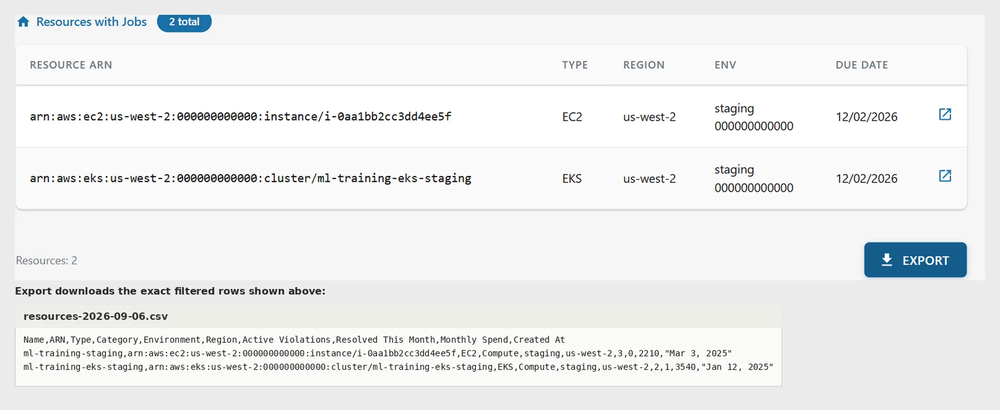
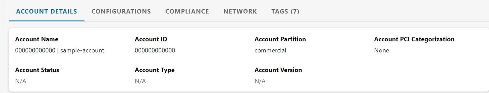
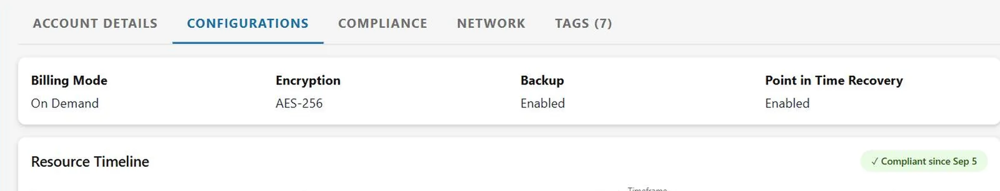
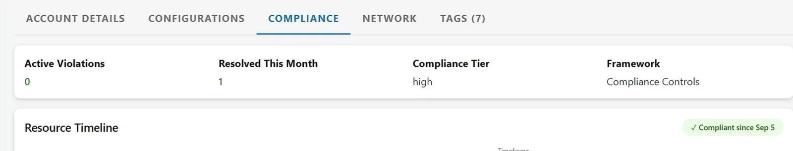
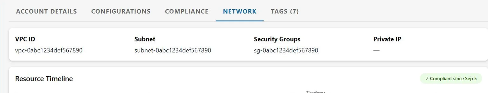
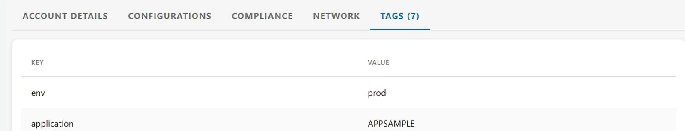

Capital One
Resource Dashboard
Engineers responsible for cloud resources had no single place to see them. Answering “what do I own, and what needs attention” meant three tools and a spreadsheet. I designed and built the dashboard that replaced that: one surface, two ways through it, and an export at every level.
Everything was somewhere, nothing was anywhere
The data already existed. Ownership lived in one system, compliance jobs in another, the resource inventory in a third, and the way you answered a question about your own infrastructure was to open all three and reconcile them by hand.
That is a shape of problem I keep running into: nothing is broken, every individual tool works, and the entire cost sits in the seams between them. It never gets filed as a bug because no single step is wrong. It just quietly taxes everyone who has to do it.
The three-tool reconciliation, before the dashboard existed
A screen recording of the old workflow, so the reader feels the cost instead of being told about it. Cut it tight: the point is how many windows it takes to answer one question.
- Window 1: ownership lookup, paste an identifier
- Window 2: the compliance job list, find the same resource
- Window 3: the inventory, confirm what it actually is
- End on all three open at once
Two views over one dataset
Two groups of people arrive at a tool like this with genuinely different questions. One has a job to do today and wants the shortest path to it. The other is exploring, and needs to understand the shape of what they own.
Rather than average them into one compromised view, the dashboard has two and makes the default the urgent one. The job-focused view opens first, sorted by due date, because someone arriving without a plan is usually arriving because something is due. The hierarchy explorer is one toggle away for everyone else.
Category, region and environment. They persist across the view toggle, so switching does not cost you the narrowing you just did.
A second source joined in rather than a filter over the first: which of your resources have work outstanding.
Two readings of one dataset. The urgent one opens first, because someone arriving without a plan is usually arriving because something is due.
Scoped to what is on screen: current filters, current level, nothing else.

Drilling without getting lost
The explorer goes environment, then region, then type, then the resource itself. Four levels is enough to get lost in, so every level carries its own counts and a breadcrumb back out.
The counts are the part that earns its place. A level that only lists categories tells you where you can go; a level that lists categories with how much is in each tells you where you should go. It is a small addition that changes the drill-down from navigation into triage.
An export at every level
Every table exports, and what it exports is exactly what you are looking at: current filters, current level, nothing else.
This sounds like a checkbox feature and was one of the most-used things in the tool. People do not live in dashboards. They come in, narrow down to the thing they care about, and then need it somewhere else — a ticket, a spreadsheet, a message to the team that owns it. A dashboard that cannot hand off its own answer sends everyone back to the reconciling-by-hand it was built to remove.

A real boundary, not a prop
Every screen here fetches. The data layer is typed fetch functions behind small hooks that track loading, error and refetch, with a mocked REST surface behind them at the service-worker level rather than an imported array pretending to be a response.
That distinction is why the loading skeletons and the retry banner exist at all. A component handed its data synchronously has no in-flight state to design, no failure to recover from, and no way to find out it was wrong until it meets a real server. The same handlers run in Node for the tests, so those drive the actual fetch, loading, render, error and retry cycle instead of asserting against props.





The requests are real
Open the Network tab and reload. Genuine fetch calls with latency, skeletons while they are in flight, and an error state that recovers. No still can make this claim and no sentence should be asked to carry it alone.
- Network tab open, reload, the endpoints resolve in turn
- Loading skeletons on screen while they are in flight
- Force one to fail; the retry banner appears
- Click retry and let it recover
From three tools to one
The reconciliation step is gone. What used to be a cross-tool search is a paste-an-identifier lookup, and what used to be invisible — which of your resources have work outstanding — is the screen that opens by default.
The dashboard shipped to enterprise users. Figures below describe the shape of the work rather than usage numbers, which are not mine to publish.
No single view of your resources
One surface, two ways through it
Search across several tools
Paste an identifier, get the resource
Outstanding work invisible
Default view, sorted by urgency
Manual, fragmented exports
One-click export at any level
Metadata hard to parse
Organised for scanning
No compliance history
Event timeline and table